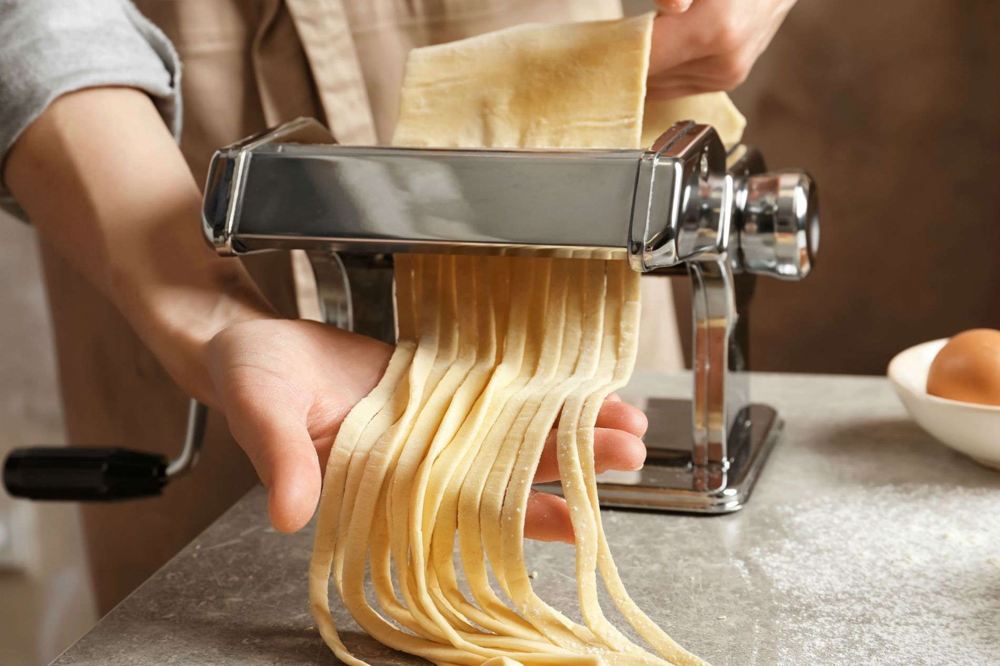

Best Pasta Makers
Making your own pasta isn't just more delicious but it can also be healthier. You get to choose what goes into your noodles and you can even include vegetables when making your dough.
Read the reviewMaking your own pasta isn't just more delicious but it can also be healthier. You get to choose what goes into your noodles and you can even include vegetables when making your dough.
Read the reviewThere are few things better than homemade, fluffy waffles in the morning.
Every kitchen needs a quality chef's knife - you can use them for just about any cutting need.
If you like soda or sparkling water you can save a lot of money with s soda maker